Практичні курси · журнал «ДентАрт» 2021 №2
Bulk-fill-композит і високоміцні волокна у лікуванні тріснутих зубів
LAYERING BULK-FILL COMPOSITE AND HIGH-STRENGTH FIBERS TO TREAT A CRACKED TOOTH
«Синдром тріснутого зуба» характеризується як неповний перелом вітального бокового зуба. Тріщина розташована в дентині й іноді доходить до пульпи зуба. Визначення синдрому тріcнутого зуба запропонував Кемерон у 1964 році.1 Раніше існували відомості про дискомфорт у пульпі, що виникає в результаті часткового перелому зуба.
Діагноз, лікування та прогноз залежать від протяжності тріщини, часу втручання і методу реставрації. Це найважливіші параметри при визначенні результату лікування. Площина перелому зуба може бути цілком над'ясенною і може як поширюватися, так і не поширюватися до порожнини зуба. Частковий перелом (фото 1 і 3) потенційно не є катастрофічним. Такі зуби можна відновити за допомогою прямої реставрації, коронки (фото 2 і 4) чи за допомогою штифта і коронки, яким передуватиме ендодонтичне втручання.
Перелом може бути катастрофічним, якщо він зачіпає періодонтальне прикріплення. Такий дефект не підлягає відновленню. Щоб уникнути незворотного пошкодження, треба якомога швидше провести лікування. Слід використати негайну іммобілізацію екстракоронковою або інтракоронковою шиною. Традиційно коронки використовуються як профілактичне лікування зубів з тріщинами; проте повні коронки можуть збільшити ризик перелому зубів, особливо ендодонтично лікованих. Повні коронки описуються як найменш прийнятний варіант, і його слід уникати, якщо тільки це не пов'язано з повторним лікуванням зуба, раніше покритого коронкою. Дослідження засвідчують, що композити для бічних зубів мають прийнятну довгострокову клінічну ефективність, якщо оператор дотримується певних клінічних параметрів. Якщо стоматолог має достатню кваліфікацію і знайомий з багатьма принципами адгезивної стоматології, він може працювати за межами показань прямої реставрації в разі сильно зруйнованих зубів. Композитні реставрації стали звичною справою через зростаючі естетичні вимоги пацієнтів і високий термін служби навіть тих, що встановлені в об'ємних порожнинах.
У цій статті описані два різні методи прямої композитної реставрації для лікування синдрому тріснутого зуба:
- Один метод передбачає нанесення двох шарів bulk-fill-композиту (SonicFill, Kerr) з розміщенням між ними високоміцних поліетиленових волокон (Ribbond).
- У другому використовуються три шари композиту з відрізками високоміцного поліетиленового волокна між кожним шаром.
Волокна підвищують стійкість зуба до пошкоджень, а також можуть використовуватися для додаткової підтримки ослаблених горбиків і невеликих тріщин.
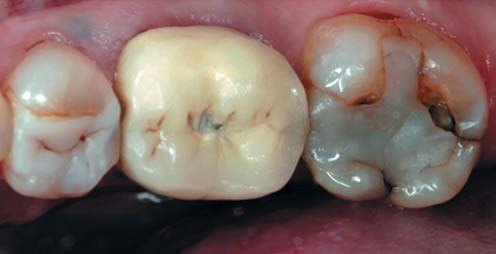
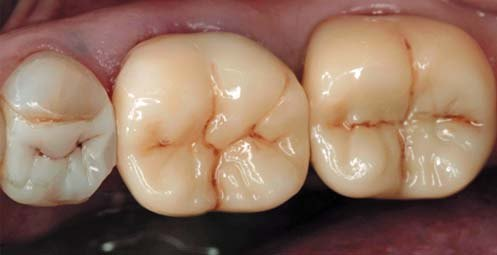
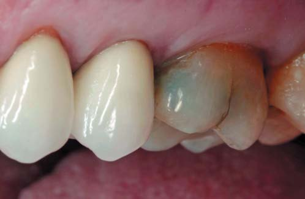
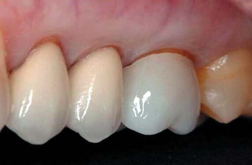
Клінічний випадок 1
Відновлення за допомогою bulk-fill-композиту було обрано, щоб спростити процедуру, значно скоротити тривалість реставрації і зробити процес ефективнішим. Пацієнтка 68 років звернулася зі скаргами на чутливість до холодового подразника і на біль при жуванні. Клінічне обстеження і рентген показали поломку композитної реставрації класу II в зубі 25 (фото 5 a). Був зроблений прицільний знімок зуба (фото 5 б). Виявлена мезіально-дистальна тріщина без видимої пародонтальної кишені. Усі інші зуби верхньої щелепи були оглянуті й оцінені як безсимптомні.
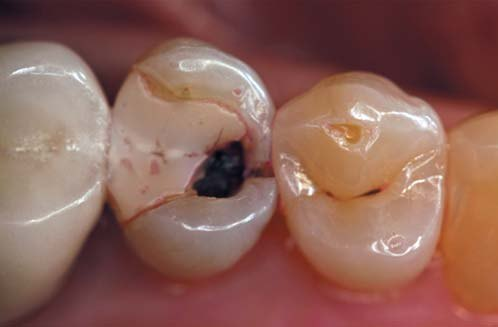
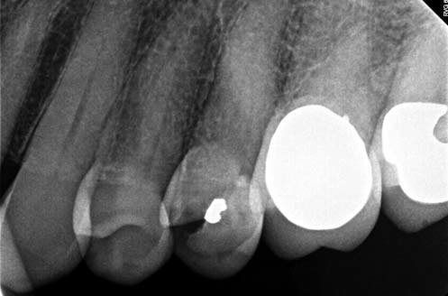
Діагноз: синдром тріснутого зуба.
Пацієнтку попередили про сумнівність довгострокового прогнозу в зубах з тріщинами, але вона вирішила зберегти зуб. Вона розуміла, що при поширенні тріщини на корінь може утворитися пародонтальна кишеня. Потім може бути рекомендовано видалення зуба з подальшою імплантацією.
Ізоляція була забезпечена за допомогою рабердаму (техніка спліт-дам), у відповідності з рекомендаціями з реставрації Каліфорнійського університету в Лос-Анджелесі, і жоден інший метод ізоляції не забезпечує ліпшого контролю над вологою і контамінацією рідинами. Також були вилучені пошкоджена композитна реставрація та інфіковані тканини зуба. Не слід видаляти дентин більше, ніж необхідно. Препарування завершене, всі внутрішні кути згладжені для зменшення концентрації напруги (фото 6). Це поліпшує адаптацію композиту до тканин зуба. Жодних скосів не було зроблено з оклюзійного чи ясенного краю. Для захисту сусіднього зуба його ізолювали стандартною металевою стрічкою Тоффльмайра.
Кожна поверхня оброблена MicroEtcher (Danville Materials) порошком із зернистістю 35 мікронів Crystal Air (Crystalmark Dental Systems) для збільшення міцності зв'язку. 2% хлоргексидин (Cavity Cleanser, Bisco) був застосований для дезінфекції, потім поверхня висушена повітрям. Після видалення матриці Тоффльмайра встановлені секційна матриця і кільце (фото 7), а також клини і металева секційна матриця (Garrison Dental Solutions). Праймер (OptiBond XTR, Kerr) наносили з помірним тиском протягом 30 секунд (фото 8), потім обережно сушили повітрям перед нанесенням адгезиву (OptiBond XTR, Kerr), втираючи (фото 9) протягом 15 секунд.
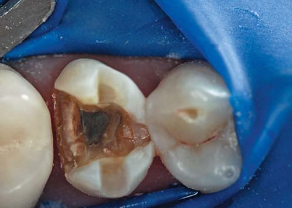
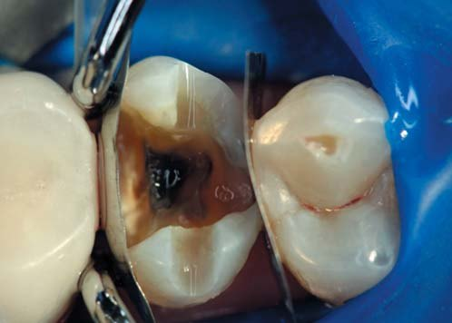
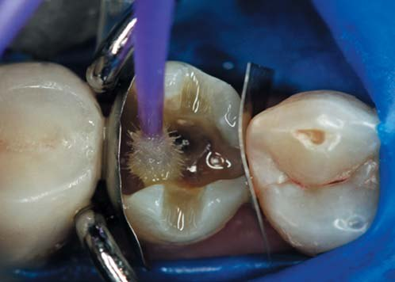
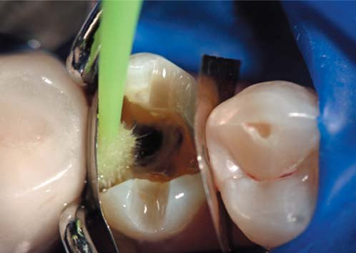
Методика bulk-fill включала внесення двох шарів композиту, починаючи з невеликого шару (SonicFill, Kerr) (фото 10), потім двох високоміцних поліетиленових волокон довжиною 2 мм (Ribbond), змочених ненаповненим адгезивом. Надлишки адгезиву видаляли безворсовою марлею. Волокна щільно адаптовані до неотверділого композиту в мезіо-дистальному напрямку (фото 11). Інший відрізок волокна щільно вводили в неотверділий композит у вестибуло-оральному напрямку (фото 12). Волокна були адаптовані і притиснуті (фото 13) якомога ближче до дна порожнини, а потім полімеризувалися. Ця порція буде основою або лайнером (фото 14). Нарешті, найтовщий шар був нанесений за допомогою того ж bulk-fill композиту.
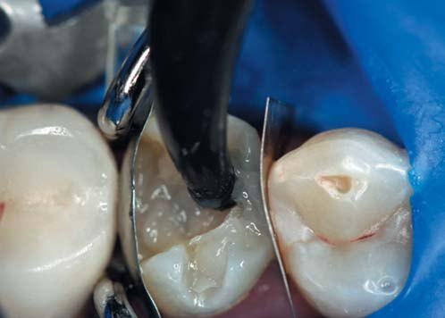
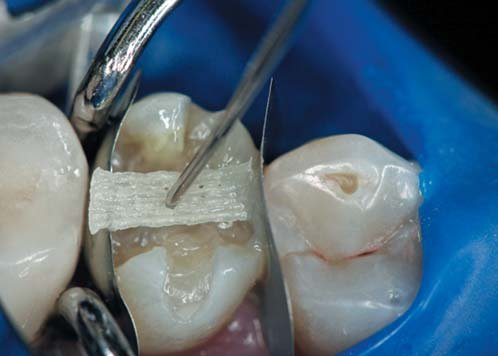
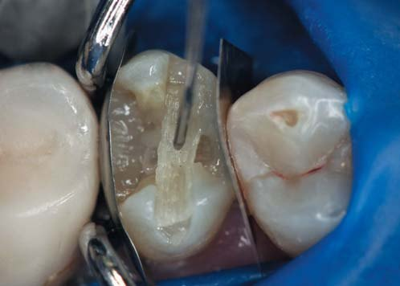
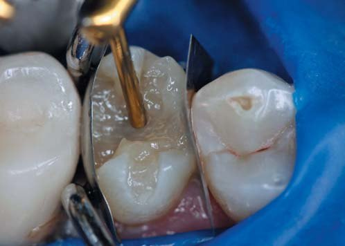
Відтінки (Color Plus, Kerr) були поміщені для створення третинної анатомії (фото 15). Гліцерин нанесено на всю поверхню, щоб уникнути утворення шару, інгібованого киснем, що забезпечує повну полімеризацію композиту, а потім зроблено світлозатвердіння (фото 16). Раббердам був знятий, при всіх ексцентричних рухах перевірялася оклюзія, щоб уникнути передчасного контакту.
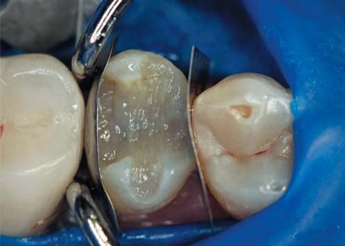
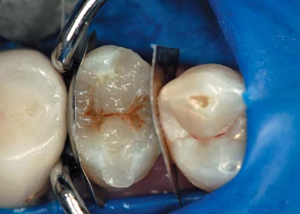
Потім реставрацію відполірували полірувальною пастою (DiaShine, VH Technologies), використовуючи щітку, підтримуючи її постійний легкий контакт з реставрацією. Це забезпечує потрібний блиск поверхні (фото 17 а). Для профілактики від епізодичного бруксизму пацієнтці виготовлена нічна захисна капа. Було зроблено післяопераційний рентгензнімок (фото 17 б).
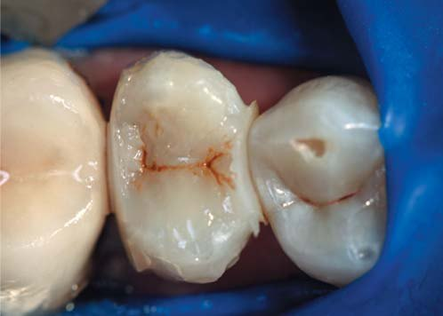
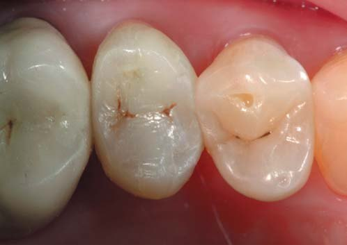
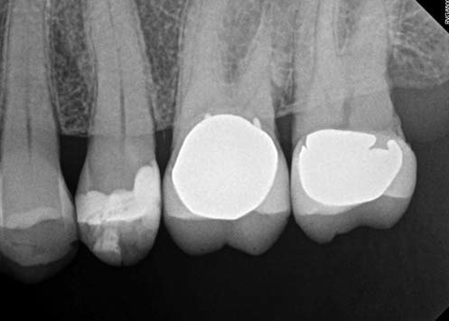
Ми пояснили пацієнтці, що це тимчасове естетичне рішення, зроблене для полегшення подальшого лікування. Це не було презентовано як остаточне рішення. Поки що за реставрацією проведене восьмирічне спостереження (фото 18). Поширення тріщини на порожнину зуба ми не виявили. Поки що пацієнтка вирішила залишити реставрацію неторканою.
Нині єдина частина лікування, яку слід було б зробити інакше, – це використати Ribbond Securing Composite, тільки тому, що він ідеально підходить для адаптації волокна Ribbond. Це також дозволяє спростити процес адаптації волокна.
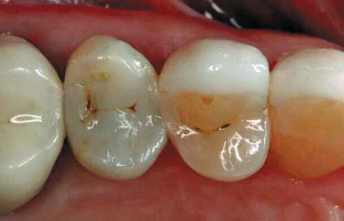
Клінічний випадок 2
Техніка внесення: пошарове внесення допомагає знизити напругу, створювану усадкою композиту при полімеризації, оскільки нівелюється С-фактор порожнини.
Пацієнт 65 років прийшов на плановий огляд без скарг на чутливість чи інші симптоми. Обстеження показало, що в зубі 27 були численні тріщини в дентині (фото 19), що свідчило про структурне пошкодження зуба. Тріщини дентину виникли в результаті деформацій зуба, ослабленого старою амальгамною пломбою.
Тріщини доцільно лікувати навіть тоді, коли у пацієнта немає симптомів, тому що отвори розміром 50-100 мікрон дозволяють бактеріям розмножуватися і проникати в дентин. Неліковані тріщини врешті-решт призводять до перелому зуба, який вимагає ендодонтичного втручання, пародонтального лікування або видалення зуба.
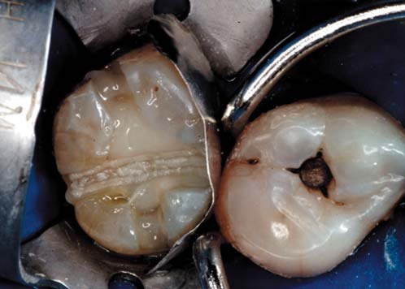
Знову повна ізоляція була досягнута за допомогою рабердаму. Після видалення амальгами і завершення препарування всі внутрішні кути були згладжені (фото 20) для зменшення концентрації напружень. Це поліпшує адаптацію композиту до структур зуба. На краях емалі з оклюзійної і приясенної стінки скоси не створювалися. Міцність зчеплення з тканинами зуба була збільшена шляхом піскоструминної обробки (MicroEtcher) порошком із зернистістю 35 мікронів Crystal Air. 35% фосфорна кислота (Select HB Etch, Bisco) наносилася на 15 секунд, потім ретельно змивалася. Щоб уникнути деградації міцного з'єднання, на 30 секунд наносили антибактеріальний агент 2% хлоргексидин (Cavity Cleanser) – з видаленням надлишку стерильними губками. У цьому випадку також використовувався адгезив тотального протравлювання (OptiBond FL, Kerr). Наносили кілька шарів праймера, експозиція 40 секунд для висихання і випаровування розчинника.
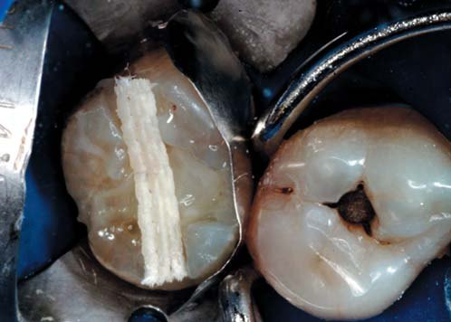
У цій пошаровій техніці використовуються три різні композитні шари. Спочатку на дно порожнини накладається шар теплого композиту; потім два відрізки високоміцного поліетиленового волокна (Ribbond) шириною 2 мм, змочені ненаповненим адгезивом. Надлишки видалялися безворсовою марлею.
Один відрізок волокна щільно адаптувався в незатверділий композит в мезіо-дистальному напрямку (фото 21), а другий – у вестибуло-оральному напрямку (фото 22). Волокна адаптувалися і притискувалися якомога ближче до дна порожнини, а потім полімеризувалися.
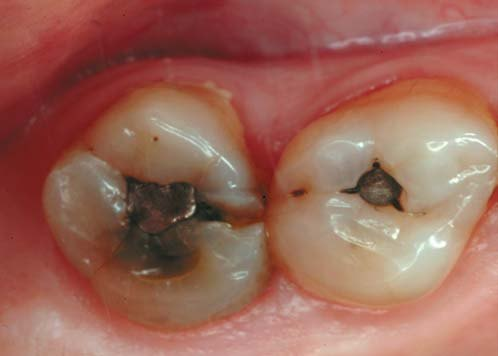
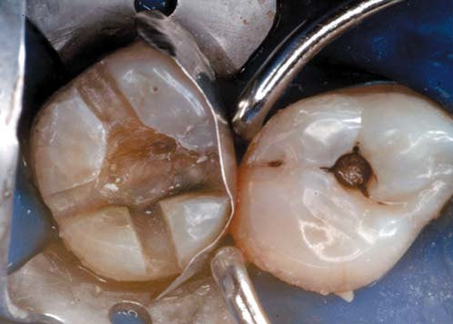
В одному дослідженні за допомогою скануючої електронної мікроскопії було виявлено, що коли волокна вносяться проксимально на глибину, мікропротікання було незначним або його не було, а міцність зв'язку при мікронатягу зміцнювала дентин у порожнинах з високим C-фактором. Далі вносився ще один шар композиту (фото 23). Остаточний шар формували з попередньо нагрітого композиту (Tetric EvoCeram, Ivoclar Vivadent) для збільшення довговічності реставрації. Для створення третинної анатомії були нанесені відтінки (Color Plus) (фото 24), потім вони полімеризувалися. Після зняття рабердаму оклюзія була скоригована зі збереженням легких контактів у центральній оклюзії. Загострені горбики зубів-антагоністів згладжені для зменшення сил натягу.
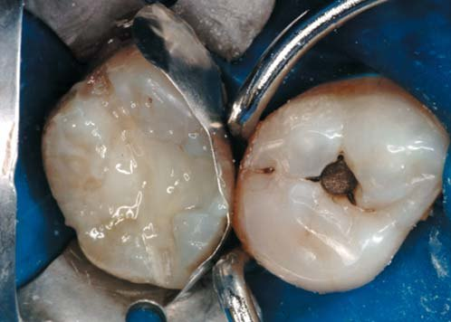
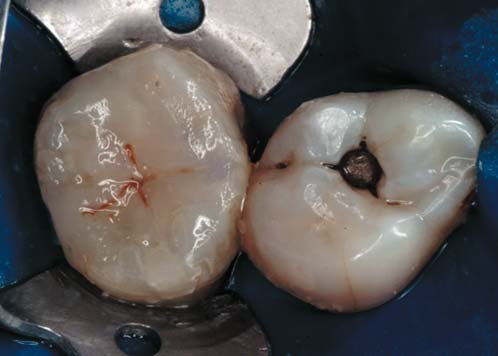
Потім реставрацію обробили та відполірували щіткою і полірувальною пастою (DiaShine). Легкий безперервний контакт забезпечує ліпший блиск поверхні. Шар силанту (OptiGuard, Kerr) нанесено для запечатування невеликих тріщин після фінішної обробки (фото 25). Для профілактики бруксизму пацієнтові була виготовлена захисна капа на ніч.
Реставрація збереглася навіть після 10-річного спостереження, демонструючи відсутність збільшення протяжності тріщин у дно пульпи (фото 26). Як і в першому випадку, єдине, що ми зробили б сьогодні інакше, – використали б Ribbond Securing Composite, щоб спростити внесення і поліпшити адаптацію волокон Ribbond до зубів.
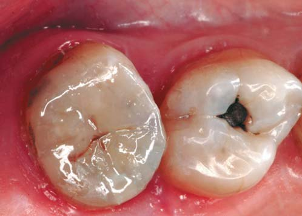
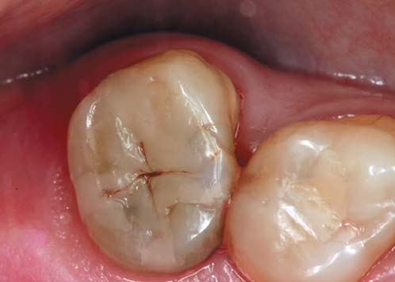
Обговорення
Тріснутий зуб може бути причиною поширення в дентині бактерій, які можуть викликати запалення або захворювання пульпи і періапікальних тканин. Складні реставраційні та ендодонтичні втручання, що видаляють дентин, зменшують внутрішню міцність зуба, роблячи його вразливим до переломів. Тріщини зубів зустрічаються часто і важко піддаються лікуванню, вони викликані надмірними зусиллями при жуванні чи патологією прикусу. Надмірні або паранормальні сили можуть послабити зуб.
Різноспрямовані волокна Ribbond, що перекривають тріщину, діють як плетені кошики, котрі передають напругу в зону з більшою структурною цілісністю. Коли волокна поміщаються на оклюзійну поверхню реставрації у вестибуло-оральному напрямку, спостерігається значно вищий опір перелому. Сила зчеплення з дентином збільшується у порожнинах з високим C-фактором. Украй важливо, щоб реставрація залишалася досить міцною, здатною витримувати оклюзійну напругу, особливо якщо на реставрацію діють ті самі сили, які призвели до первісного руйнування. Дані свідчать, що композит є чутливим до техніки реставрації матеріалом, який можна використовувати в об'ємних порожнинах при правильних маніпуляціях та ізоляції. Як фахівці в галузі гігієни ротової порожнини, ми завжди шукаємо кращі методи лікування для наших пацієнтів.
Висновки
Як тільки тріщини діагностуються на ранній стадії, негайна пряма армована реставрація забезпечить захист і може врятувати багато зубів. Якщо залишити зуб з тріщиною без лікування, може виникнути інвазія бактерій, що призведе до запалення і хвороби. Волокна Ribbond перекривають тріщини, які зазвичай виникають на дні порожнини старих амальгамних і композитних пломб. Волокна діють як скоба, скріплюючи обидва боки тріщини. Шляхом адаптації волокон до дентину лікар може підвищити міцність зуба і запобігти поширенню тріщини в дентині. Деталі, про які йшлося у статті, є ключовими факторами успіху прямих адгезивних реставрацій тріснутих зубів.
Журнал «Dentaltown», листопад 2020 р. www.dentaltown.com. Переклад Максима Скрипника.
Література
- Cameron C. E. Cracked-Tooth Syndrome // J Am Dent Assoc 1964; 68 (March): 405–12.
- Ritchey B., Mendenhall R., and Orban B. Pulpitis Resulting from Incomplete Tooth Fracture // Oral Med Surg Oral Pathol 1957; 10 (June): 665–70.
- Mamoun J. S., and Napoletano D. Cracked Tooth Diagnosis and Treatment. An Alternative Paradigm // European Journal of Dentistry, Vol. 9, Issue 2, April–Jun 2015.
- Mukut P., Kartik A., and Harmeeta M. The Cracked Tooth: An Enigma for the Clinician // J Pre Clinton Dent Res 2015; 2(4):64–70.
- Schmitt J., Robbins W., and Schwarz R. The Fundamentals of Operative Dentistry // 2nd ed. Chicago IL Quintessence, 2001L: vii.
- Wilder A. D., May K. N., Bayne S. C., Taylor D. F., and Leinfelder K. F. Seventeen-Year Clinical Study of Ultraviolet Class I and II Restorations. July 1, 2007.
- Steier L. and Steier G. Optimum Restoration of Missing Tooth Structure // Private Practice, (FMC Ltd, England) March 2008: 16–20.
- Opdam N. J., Bronkhorst E. M., Loomans B. A., and Husymans M. C. 12-Year Survival of Composite vs. Amalgam Restorations // J Dent Rest. 2010 Oct; 89(10):1063–7.
- Chyz G. Restoration of an 'At Risk' Tooth, Replacing an Old Amalgam With a Fiber Mesh and Nanocomposite, Inside Dentistry, July/August 2010): 52–56.
- Barghi N., Knight G. T., and Berry T. G. Comparing Two Methods of Moisture Control in Bonding to Enamel: A Clinical Study // Oper Dent., July–August 1991, 16(4): 130–135.
- Sorensen J. A. and Mito W. T. Rationale and Clinical Technique for Esthetic Restoration of Endodontically Treated with the ComoPost and IPS Empress Post System // Quint Dent Technol 1998; 21: 81–90.
- Walls A. W., McCabe J. F., and Murray J. J. The Polymerization Contraction of Visible Light Composite Resins // J Dent 1988; 16 177–181.
- Van Meerbeek Special Report for the October 2014 issue of Compendium Adhesive Dentistry: 2013 fifth International Congress on Adhesive Dentistry (ICD), held June 14–15, 2013, in Philadelphia at the University of Pennsylvania.
- Park H. and Lee I. Effect of Glycerin on the Surface Hardness of Composite After Curing // J Kor Acad Cons Dent 2011; 36(6):483–489.
- Ogden A. R. Porosity in Composite Resins: An Achilles' Heel? // J Dent 1985. Dec; 13(4):331–340.
- Lutz E., Krejci I., and Oldenburg T.R. Elimination of Polymerization Stresses at the Margins of Posterior Composite Resin Restorations: A New Restorative Technique // Quintessence Int. 1986 Dec; 17(12):777–84.
- Carrilho M. R., Carvalho R. M., de Goes M. F., di Hipolito V., Geraldeli S., Tay F. R., Pashle D. H., and Tjäderhane L. Chlorhexidine Preserves Dentin Bond in Vitro // J Dent Rest. 2007 Jan; 86(1):90–4.
- Hirata R. Tips in Cosmetic Dentistry // Sao Paulo (Brazil): Medical Arts; 2010.
- Wagner W. C., Aksu M. N., Neme A. M., Linger J. B., Pink F. E., and Walker S. Effect of Pre-Heating Resin Composite on Restoration Microleakage // Oper Dent 2008 Jan-Feb; 33(1): 72–78.
- Trushkowsky R. Restoration of a Cracked Tooth with a Bonded Amalgam // Quintessence Int 1991; 22:397-400.
- Vinayak P., Chakravarthy K., Telang L. A., Nerali J., and Telang A. Cracked Tooth: A Report of Two Cases and Role of Cone Beam Computed Tomography in Diagnosis // Case Reports in Dentistry, Vol. 2012.
- Rivera E. M. and Walton R. E. Cracking the Cracked Tooth Code: Detection and Treatment of Various Longitudinal Tooth Fractures, American Association of Endodontists Colleagues for Excellence, Newsletter, Summer 2008.
- Bader J. D., Martin J. A., and Shugars D. A. Preliminary Estimates of the Incidence and Consequences of Tooth Fracture, JADA, Vol. 126, No, 12, 1650–1654, 1995.
- Walton R. E. Longitudinal Tooth Fractures in Torabinejad M. and Practice of Endodontics, R. E. Walton, Ed., pp. 499–519 Philadelphia, Pa. 3rd edition, 1995.
- Belli S., Cobankara F. G., Eraslan O., et al. The Effect of Fiber Insertion on Fracture Resistance of Endodontically Treated Molars with MOD Cavity and Reattached Lingual Cusps // J Biomed Mater Res B Appl BioMater. 2006; 79(1): 35-41.
- Belli S., Erdemir A., and Yildirim C. Reinforcement Effect of Polyethylene Fiber in Root-Filled Teeth: Comparison of Two Restoration Techniques // International Endodontic Journal, 38, 1–7, 2005.
- Belli S., Dommez N., and Ezkitasciouglu G. The Effect of C Factor and Flowable Resin or Fiber Use at the Interface on Microtensile Bond Strength to Dentin.
- Нciguez I. Direct Cusp Reconstruction Using Composite Pins and Ribbond Fibers // Dentaltown August 2018. 83–88.
- Burgess J., Walker R., and Davidson J. M. Posterior Resin-Based Composite: Review of the Literature // Pediatric Dent. 2002 Sep–Oct; 24(5):465-79.
- Glick M. The Numbers Game // Commentary, Editorial. May 2008 Vol. 139, Issue 5, Pages 528–530.